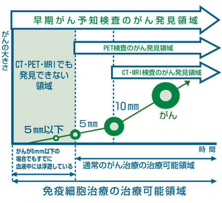
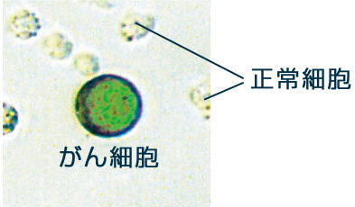

简体中文
简体中文


- 検査TOP
- 早期がん予知検査『CTC』
- 早期がん予知検査『CRAB-U』
血液中の見えないがんを探し出す

MRIやCTでは10mm程度まで、PETでは5mm程度までと画像診断のがん検出能力には限界がありますが、当院の早期がん予知検査は、血液中に浮遊する5mm以下のがん細胞の検出を可能にし、がんの早期発見と最適な治療法の選択を実現します。
早期がん予知検査によるがん細胞の早期発見と免疫細胞治療による早期治療が可能となりました。
血液中の見えないがん細胞
増殖し大きくなったがんは血液やリンパ液へと浸潤し、流れに乗って循環して離れた臓器に転移を引き起こそうとします。この血液中を循環しているがん細胞をCTC（Circulating Tumor Cell）と言います。
血液中のCTC（血中循環腫瘍細胞）の数がFDA（米国食品医薬品局）では、転移性の乳がん、結腸直腸がん、前立腺がんにおいて予後予測のバイオマーカーとしての有用性を示しており、臨床検査として承認されています。
早期がん予知検査『CTC』の流れ
- 1.説明・同意書の記入
- 2.採血(約7.5ml)
- 3.検査
- 4.結果説明
早期がん予知検査『CTC』の特徴
1.がんの早期治療（免疫細胞療法のみ）可能
※５ｍｍ以下（早期）のがんはＣＴ・ＭＲＩ・ＰＥＴ検査でも部位を特定できない為、手術・抗がん剤等は施行できません。
2.がんの予後予測や治療後の効果判定に有用
3.健常者の早期がんの検診・診断が可能
- 目的
- 血液中のがん細胞（CTC）の発見
- 内容
- CT・PET・MRIでも発見できない５mm以下のがん細胞が検出可能
- 判定
- 血液中のがん細胞を個数単位で検出
- 判定後のケア
- 当院の免疫細胞療法による早期治療が可能
- 期間
- 採血後約２週間
- 採血量
- 約7.5ml
- 検査費
- 140,000円
CTC(血中循環腫瘍細胞)とは
CTCとはCirculating Tumor Cellの略で、Circulatingは循環、Tumorは腫瘍、Cellは細胞、という意味です。末梢血浮遊がん細胞とか血中循環腫瘍細胞と言います。

※オンコリスバイオファーマ（株）画像提供
上記、顕微鏡写真の緑色に光っているがん細胞がCTC(血中循環腫瘍細胞)です。 がんはある程度大きくなると、別の臓器などへ転移をする特徴があります。その際に血液中やリンパ液中などをたどって転移をするために姿を多少変えます。それがCTC(血中循環腫瘍細胞)です。 この細胞は転移を引き起こす可能性を持つ細胞です。
CTCの発見とその有用性
1869年にオーストリアの医師Thomas Ashworthにより存在が報告されて以降、CTCに関する様々な研究が行われてきました。
がん診断技術としては一般的には用いることは非常に困難でした。それはCTCが、がん患者の血液1mℓ中に血液細胞が約50億個存在しその中に、10個程度しか存在しない非常に見つけにくいがん細胞であるからです。
しかしながら、FDA（米国食品医薬品局）において転移性の乳がん、直腸結腸がん、前立腺がんの予後予測において有用性があるとされ、Veridex社の免疫磁気ビーズを用いたCTC検出装置、CellSearch®SystemはFDAの承認を得ています。
CTC検査とその将来性
CTC検査にも様々な検査方法が存在しますが、そのどれもが素晴らしい技術を持っている反面、デメリットも存在します。
この検査では「将来、がんになるかも知れない」というリスクを検査するわけではありません。今現在がんであるかどうかを可能した検査で、且つがんが5mmや10mm以上の大きさになる前のがんを見つける検査です。今健康な方やがんの疑いと言われている方、あるいは過去にがんの治療を受けたことがある方などには是非受けて頂きたいおすすめの検査です。